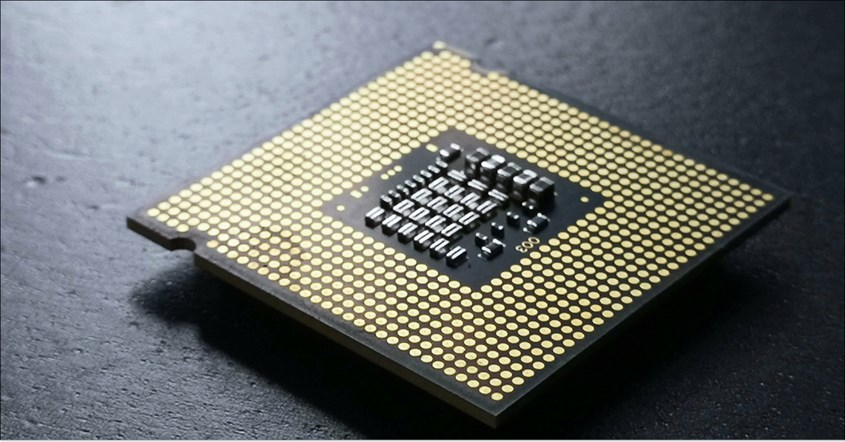
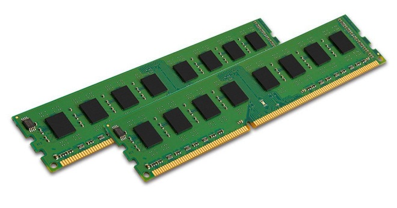
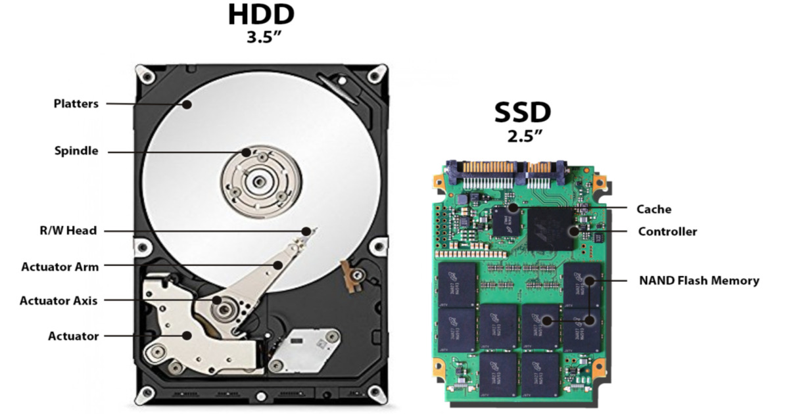
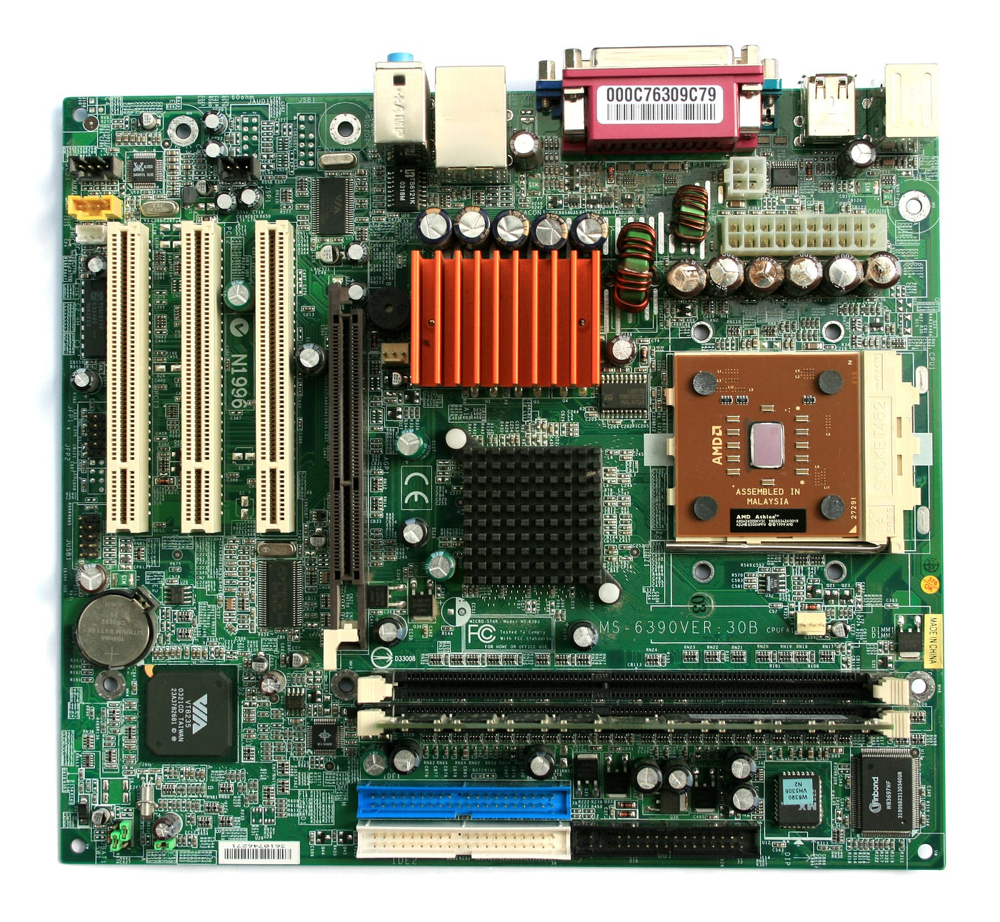
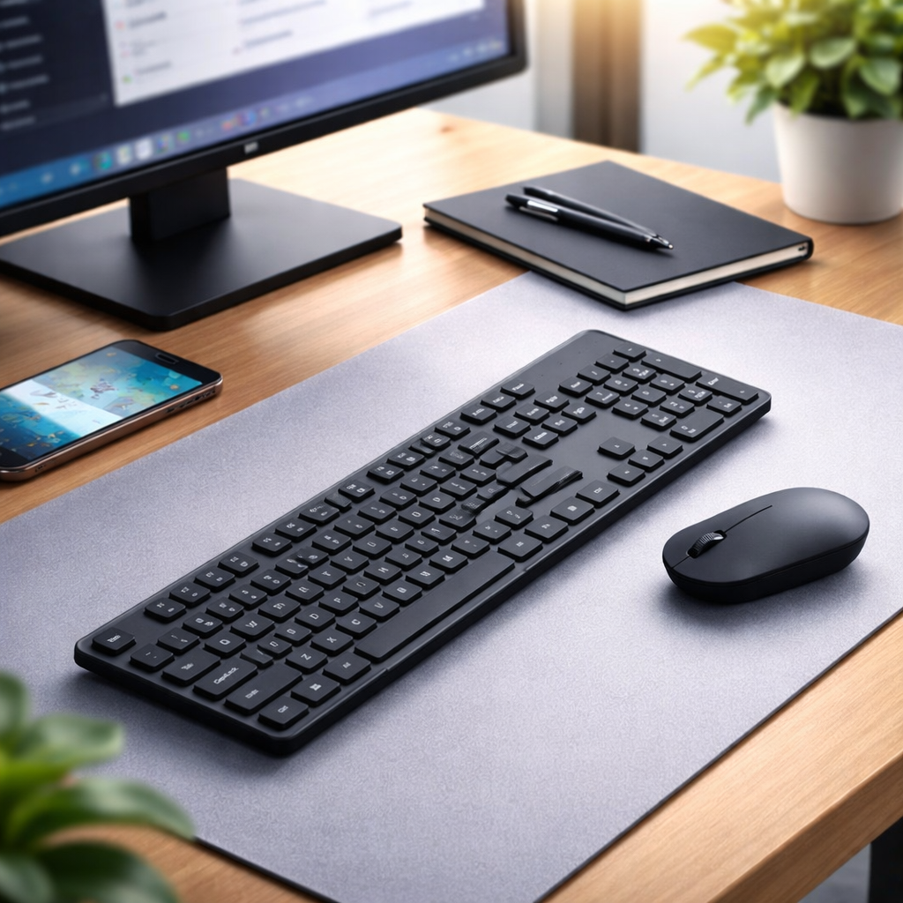
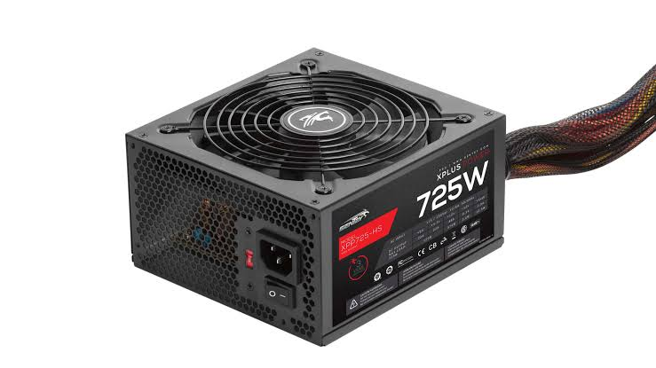

CPU singkatan dari Central Processing Unit. Komponen ini sering disebut otak komputer karena semua perintah dari pengguna diolah di sini.
Kecepatan processor diukur dengan satuan GHz (gigahertz). Selain itu ada istilah core atau inti. Processor dengan 4 core bisa mengerjakan empat pekerjaan sekaligus, seperti empat orang bekerja bersamaan.
Processor yang cepat tidak berguna kalau RAM-nya terlalu kecil. Semua komponen harus seimbang.


RAM singkatan dari Random Access Memory. Fungsinya menyimpan data yang sedang dipakai program yang berjalan saat ini.
Bayangkan RAM sebagai meja kerja. Semakin luas mejanya, semakin banyak buku yang bisa dibuka bersamaan. Kalau mejanya sempit, kita harus bolak-balik menyimpan dan mengambil buku dari lemari, dan itu memakan waktu.
Sifat penting RAM adalah sementara. Begitu komputer dimatikan, semua isi RAM hilang. Karena itu kita harus menyimpan pekerjaan ke hard disk sebelum mematikan komputer.
Berbeda dengan RAM, media penyimpanan menyimpan data secara permanen. Data tetap ada walaupun komputer dimatikan. Ada dua jenis yang paling umum, yaitu HDD dan SSD.
| Pembanding | HDD | SSD |
|---|---|---|
| Cara kerja | Piringan yang berputar | Chip memori, tanpa bagian bergerak |
| Kecepatan | Lebih lambat | Jauh lebih cepat |
| Harga per GB | Lebih murah | Lebih mahal |
| Tahan guncangan | Kurang tahan | Lebih tahan |
| Suara | Terdengar berputar | Tidak bersuara |
Kesimpulannya, pilih SSD kalau ingin komputer terasa cepat, dan pilih HDD kalau butuh kapasitas besar dengan harga murah. Banyak orang memakai keduanya: SSD untuk sistem operasi, HDD untuk menyimpan data.

Di komputer, setiap satuan naik kelipatan 1024 karena memakai bilangan biner.
| Satuan | Singkatan | Setara Dengan | Contoh Isi |
|---|---|---|---|
| Byte | B | 8 bit | Satu huruf |
| Kilobyte | KB | 1.024 Byte | Satu halaman teks |
| Megabyte | MB | 1.024 KB | Satu lagu MP3 |
| Gigabyte | GB | 1.024 MB | Satu film |
| Terabyte | TB | 1.024 GB | Ribuan film |
Coba kalkulator ukuran penyimpanan di halaman beranda untuk melihat perhitungannya secara langsung.
Motherboard adalah papan utama tempat semua komponen dipasang dan saling terhubung. Kalau komputer diibaratkan tubuh manusia, motherboard adalah kerangka sekaligus urat sarafnya.

Perangkat input dipakai untuk memasukkan data ke komputer, sedangkan perangkat output menampilkan hasil olahan komputer kepada kita.
Ada perangkat yang bisa berfungsi dua-duanya. Layar sentuh misalnya, menampilkan gambar sekaligus menerima sentuhan jari kita.

Power supply atau PSU mengubah listrik dari stopkontak menjadi tegangan yang sesuai untuk tiap komponen. Dayanya diukur dengan satuan Watt.
Komponen ini sering diabaikan padahal sangat penting. PSU yang buruk bisa merusak komponen lain, bahkan menyebabkan komputer mati mendadak saat dipakai bekerja.
